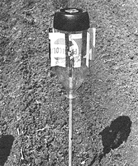

Yet another practical use for a plastic pop bottle ... this gizmo will give all your uninvited feathered friends the "bum's rush" when they drop in on your vegetable patch:
There's probably nothing more annoying than spending months preparing and caring for your garden, only to have your crops robbed by a flock of flying marauders. Well, take heart, good people, for MOTHER is here to show you a humanitarian way of discouraging the inconsiderate birds, while simultaneously recycling one of our "throwaway" society's biggest headaches: the soft-drink container.
The gadget pictured here is nothing more than a two-liter extruded plastic pop bottle-with vanes cut into it-Inverted and fastened onto a 1/2 " wooden dowel. It's actually quite easy to make, and shouldn't take you more than 10 minutes to "slap together". Start by selecting a dowel or thin broomstick (between 1/2" and 3/4" thick and about 3 or 4 feet long), then sharpen one tip of It and-with the pole held upright-frill a 3/32" hole vertically into the other end.
Now bore a 3 /16" hole right through the bottom of the container (directly in its center), and enlarge the "face" of the opening (either with a countersink bit or by simply gouging out some plastic with a pocket knife). Next, fashion a set of wind vanes for your scarecrow by first drawing seven vertical lines-a couple of inches apart-around the circumference of the vessel, from the top of its black base section up to the point where the bottle just begins to taper ... a distance of about 4-1/2 inches.
With this done, merely slice into the bottle long-these lines-with a single-edge razor or a knife, then complete each individual wind fin by making 1" horizontal scores at the ends of each of the previous slits... to produce seven "flaps", which can then be bent outward from the bottle at a breeze-snaggin' 65° angle.
And finally, slip the dowel through the neck of your new "thingamajig" and attach the pole to the container's base with a No. 5 x 3 /4" wood screw (be sure to leave the fastener slightly loose so that the "bearing" doesn't bind). Poke the pointed end of the stick Into the soil between your garden rows, and even the slightest whisper of wind will cause the scarecrow to spin . . . putting birds to flight or keeping them from alighting in the vicinity.
Mind you, now, we can't guarantee that MOTHER's rotary "raven-router" will send your feathered problems packing every time . . . but we can promise that this simple dingus will work when the wind does. And, by making several of 'em, you might just solve one big "fowl" problem!
|
 |
|
|